1. Diffusion Models In Simulation-Based Inference: A Tutorial#
This notebook introduces answers the following questions:
What is simulation-based inference (SBI)?
What are diffusion models?
Why are diffusion models so special for SBI?
Author: Jonas Arruda
import os
os.environ["KERAS_BACKEND"] = "jax"
import logging
import numpy as np
import matplotlib.pyplot as plt
import keras
import ipywidgets as widgets
logging.getLogger("matplotlib").setLevel(logging.ERROR)
from misc.diffusion.kinematics_helper import InverseKinematicsModel
# Install if not already installed
%pip install scikit-learn -q
/Users/jonas.arruda/PyCharm Projects/bayesflow/.venv/bin/python: No module named pip
Note: you may need to restart the kernel to use updated packages.
1.1. Let’s start with an example inference problem: Inverse Kinematics#
We consider a simple 3-segment planar robot arm with unknown configuration:
one scalar height offset \(h\),
three joint angles \(\alpha_1\), \(\alpha_2\), \(\alpha_3\).
The goal is: given an end position \(\color{red}{\mathbf{x}}\) of a robot arm, infer the unknown arm configuration \(\boldsymbol{\theta}=(h, \alpha_1, \alpha_2, \alpha_3)\). Hence, we want to learn a mapping \(\mathbf{x} \mapsto \boldsymbol\theta= (h, \alpha_1, \alpha_2, \alpha_3)\).
Important: this is a deliberately non-identifiable setting: different angle combinations can yield very similar end positions. That makes the inference task naturally multimodal and therefore a good stress test for flexible inference methods such as diffusion models.

1.2. How to solve this problem?#
We will train a neural network to approximate the posterior distribution for the simple inverse kinematics problem.
Concretely, we will see how to:
define a prior over parameters and a simulator producing synthetic observations,
generate a training dataset by forward simulation,
train an amortized inference model using diffusion-based SBI in BayesFlow,
draw approximate posterior samples for a new observation,
compare diffusion models to flow matching and consistency models,
make post-hoc modifications to inference via guided sampling.
1.3. 1. Simulation-Based Inference (SBI)#
In Bayesian inference, we want to infer the posterior distribution \(p(\boldsymbol\theta \mid \mathbf{x})\): a probability distribution over parameters \(\boldsymbol\theta\) given observed data \(\mathbf{x}\).
A standard Bayesian workflow needs a prior \(p(\boldsymbol\theta)\) and the likelihood \(p(\mathbf{x}\mid \boldsymbol\theta)\) to be able to compute the posterior:
\(p(\boldsymbol\theta\mid \mathbf{x}) \propto p(\mathbf{x}\mid\boldsymbol\theta)\,p(\boldsymbol\theta)\).
1.3.1. Key idea in simulation-based inference (SBI):#
Often we can simulate realistic data from the model without being able to evaluate the likelihood density and “fit” the model.
1.3.2. SBI in one sentence#
If we can sample from \(p(\mathbf{x}\mid \boldsymbol\theta) p(\boldsymbol\theta)\), we can train a neural network to approximate \(p(\boldsymbol\theta \mid \mathbf{x})\) directly.
1.3.3. Training a neural posterior estimator#
We generate many simulated training pairs: \((\boldsymbol\theta_i, \mathbf{x}_i) \sim p(\boldsymbol\theta)p(\mathbf{x}\mid\boldsymbol\theta)\)
We train a neural network to learn the mapping \(\mathbf{x} \mapsto p(\boldsymbol\theta\mid \mathbf{x})\) (or something related to that mapping).
After training, inference for a new observation \(\mathbf{x}_{\mathrm{obs}}\) becomes a fast forward-pass procedure: \(\boldsymbol\theta^{(1)},\dots,\boldsymbol\theta^{(N)} \sim q_\phi(\boldsymbol\theta\mid \mathbf{x}_{\mathrm{obs}})\), where \(q_\phi\) is the learned posterior approximation.
1.4. SBI in BayesFlow#
BayesFlow is a flexible Python library for efficient simulation-based inference (SBI) with neural networks, including diffusion models.
So let’s train a neural posterior estimator! In BayesFlow, SBI workflows can be executed in just a few lines of code, as illustrated by the conceptual snippet below:
import bayesflow as bf
# 1. Define prior and simulator
def my_prior():
return {'parameters': θ}
def my_observation_model(parameters):
return {'sim_data': x}
simulator = bf.make_simulator([my_prior, my_observation_model])
# 2. Create workflow
workflow = bf.BasicWorkflow(
simulator=simulator,
inference_network=bf.networks.DiffusionModel(...)
)
# 3. Train
workflow.fit_online(epochs=100)
# 4. Infer (amortized)
posterior_samples = workflow.sample(conditions=new_data)
# 5. Diagnose
...
1.5. Solving inverse kinematics with BayesFlow#
import bayesflow as bf
INFO:2026-07-06 11:14:03,552:jax._src.xla_bridge:834: Unable to initialize backend 'tpu': INTERNAL: Failed to open libtpu.so: dlopen(libtpu.so, 0x0001): tried: 'libtpu.so' (no such file), '/System/Volumes/Preboot/Cryptexes/OSlibtpu.so' (no such file), '/usr/lib/libtpu.so' (no such file, not in dyld cache), 'libtpu.so' (no such file)
INFO:jax._src.xla_bridge:Unable to initialize backend 'tpu': INTERNAL: Failed to open libtpu.so: dlopen(libtpu.so, 0x0001): tried: 'libtpu.so' (no such file), '/System/Volumes/Preboot/Cryptexes/OSlibtpu.so' (no such file), '/usr/lib/libtpu.so' (no such file, not in dyld cache), 'libtpu.so' (no such file)
INFO:bayesflow:Using backend 'jax'
def prior():
"""
Generates a random draw from a 4-dimensional Gaussian prior distribution with a
spherical covariance matrix. The parameters represent a robot's arm
configuration, with the first parameter indicating the arm's height and the
remaining three are angles.
Returns
-------
params : A single draw from the 4-dimensional Gaussian prior.
"""
scales = np.array([0.25, 0.5, 0.5, 0.5])
prior_samples = np.random.normal(loc=0, scale=scales)
return dict(parameters=prior_samples)
# Inverse Kinematics
def observation_model(parameters):
"""
Returns the 2D coordinates of a robot arm given parameter vector.
The first parameter represents the arm's height and the remaining three
correspond to angles.
Reference: https://arxiv.org/pdf/2101.10763.pdf
Parameters
----------
parameters : The four model parameters which will determine the coordinates
Returns
-------
x : The 2D coordinates of the arm
"""
height_arm, angle_1, angle_2, angle_3 = parameters
# length of segments
l1: float = 0.5
l2: float = 0.5
l3: float = 1.0
# Determine 2D position
x1 = l1 * np.sin(angle_1)
x1 += l2 * np.sin(angle_1 + angle_2)
x1 += l3 * np.sin(angle_1 + angle_2 + angle_3) + height_arm
x2 = l1 * np.cos(angle_1)
x2 += l2 * np.cos(angle_1 + angle_2)
x2 += l3 * np.cos(angle_1 + angle_2 + angle_3)
return dict(observables=np.array([x1, x2]))
variable_names = ["height_arm", "angle_1", "angle_2", "angle_3"]
variable_names_nice = [" ".join(v.title().split('_')) for v in variable_names]
# we merge prior and observation model into a simulator
simulator = bf.make_simulator([prior, observation_model])
# now we create the simulator and generate training data
n_simulations = 10_000
training_data = simulator.sample(n_simulations)
print(f"Generated {n_simulations} simulations")
print(f"Observables shape (robot arm endpoints): {training_data['observables'].shape}")
print(f"Parameters shape (heights and angles): {training_data['parameters'].shape}")
Generated 10000 simulations
Observables shape (robot arm endpoints): (10000, 2)
Parameters shape (heights and angles): (10000, 4)
The dataset now contains:
parameters: samples from the prior (our ground truth parameters),observables: corresponding simulated end positions.
This is the only supervision signal used for training: there are no data beyond simulations.
Next, we visualize the prior samples.
def plot_params_kinematic(params=None, params2=None):
_, _ax = plt.subplots(1, 4, sharex=True, sharey=True,
layout='constrained', figsize=(10, 2))
for a_i, (a, name) in enumerate(zip(_ax, variable_names_nice)):
if params2 is not None:
a.hist(params2[:, a_i], density=True, color='black', alpha=.5)
if params is not None:
a.hist(params[:, a_i], density=True, color='#E7298A')
a.set_xlabel(name)
_ax[0].set_ylabel("Density")
_ax[0].set_ylim(0, 1.6)
_ax[0].set_xlim(-4, 4)
def plot_arm_posterior(posterior_samples, obs):
_, _ax = plt.subplots(figsize=(3,3))
_m = InverseKinematicsModel(
linecolors=[['#E7298A'], ['#E7298A'], ['#E7298A']]
)
_m.update_plot_ax(_ax,
posterior_samples["parameters"][0],
obs['observables'][0, ::-1],
exemplar_color="#E7298A"
)
_ax.set_title('Arm Configurations')
plot_params_kinematic(params2=training_data['parameters'])
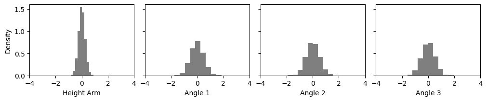
Now let’s train our neural estimator for 200 epochs! This will take around 2 minutes.
# The adapter tells the workflow what the input to our neural network is and how the target is called
adapter = (
bf.adapters.Adapter()
.to_array() # we could do more complex transformations here
.convert_dtype("float64", "float32")
.rename("parameters", "inference_variables")
.rename("observables", "inference_conditions")
)
# Create a simple workflow
workflow_dm = bf.BasicWorkflow(
adapter=adapter,
simulator=simulator,
inference_network=bf.networks.DiffusionModel(),
standardize='inference_conditions'
)
# Train for 200 epochs (passes through the simulated data)
history = workflow_dm.fit_offline(
training_data,
epochs=200,
batch_size=128,
)
INFO:bayesflow:Fitting on dataset instance of OfflineDataset.
INFO:bayesflow:Building on a test batch.
Epoch 1/200
79/79 ━━━━━━━━━━━━━━━━━━━━ 2s 17ms/step - loss: 2.2882
Epoch 2/200
79/79 ━━━━━━━━━━━━━━━━━━━━ 0s 6ms/step - loss: 1.5776
Epoch 3/200
79/79 ━━━━━━━━━━━━━━━━━━━━ 0s 5ms/step - loss: 1.2313
Epoch 4/200
79/79 ━━━━━━━━━━━━━━━━━━━━ 0s 6ms/step - loss: 1.2176
Epoch 5/200
79/79 ━━━━━━━━━━━━━━━━━━━━ 0s 6ms/step - loss: 1.2143
Epoch 6/200
79/79 ━━━━━━━━━━━━━━━━━━━━ 0s 6ms/step - loss: 1.1699
Epoch 7/200
79/79 ━━━━━━━━━━━━━━━━━━━━ 0s 5ms/step - loss: 1.1527
Epoch 8/200
79/79 ━━━━━━━━━━━━━━━━━━━━ 0s 5ms/step - loss: 1.0397
Epoch 9/200
79/79 ━━━━━━━━━━━━━━━━━━━━ 0s 5ms/step - loss: 1.0348
Epoch 10/200
79/79 ━━━━━━━━━━━━━━━━━━━━ 0s 5ms/step - loss: 1.0979
Epoch 11/200
79/79 ━━━━━━━━━━━━━━━━━━━━ 0s 5ms/step - loss: 1.3135
Epoch 12/200
79/79 ━━━━━━━━━━━━━━━━━━━━ 0s 5ms/step - loss: 1.0459
Epoch 13/200
79/79 ━━━━━━━━━━━━━━━━━━━━ 0s 5ms/step - loss: 0.9334
Epoch 14/200
79/79 ━━━━━━━━━━━━━━━━━━━━ 0s 6ms/step - loss: 0.9458
Epoch 15/200
79/79 ━━━━━━━━━━━━━━━━━━━━ 0s 6ms/step - loss: 0.9519
Epoch 16/200
79/79 ━━━━━━━━━━━━━━━━━━━━ 0s 5ms/step - loss: 1.0736
Epoch 17/200
79/79 ━━━━━━━━━━━━━━━━━━━━ 0s 5ms/step - loss: 1.0481
Epoch 18/200
79/79 ━━━━━━━━━━━━━━━━━━━━ 0s 5ms/step - loss: 0.9640
Epoch 19/200
79/79 ━━━━━━━━━━━━━━━━━━━━ 0s 5ms/step - loss: 1.0216
Epoch 20/200
79/79 ━━━━━━━━━━━━━━━━━━━━ 0s 5ms/step - loss: 0.9586
Epoch 21/200
79/79 ━━━━━━━━━━━━━━━━━━━━ 0s 5ms/step - loss: 0.9870
Epoch 22/200
79/79 ━━━━━━━━━━━━━━━━━━━━ 0s 6ms/step - loss: 0.8792
Epoch 23/200
79/79 ━━━━━━━━━━━━━━━━━━━━ 0s 5ms/step - loss: 1.0329
Epoch 24/200
79/79 ━━━━━━━━━━━━━━━━━━━━ 0s 6ms/step - loss: 0.8914
Epoch 25/200
79/79 ━━━━━━━━━━━━━━━━━━━━ 0s 5ms/step - loss: 1.0602
Epoch 26/200
79/79 ━━━━━━━━━━━━━━━━━━━━ 0s 6ms/step - loss: 0.9053
Epoch 27/200
79/79 ━━━━━━━━━━━━━━━━━━━━ 0s 5ms/step - loss: 0.9754
Epoch 28/200
79/79 ━━━━━━━━━━━━━━━━━━━━ 0s 6ms/step - loss: 1.3121
Epoch 29/200
79/79 ━━━━━━━━━━━━━━━━━━━━ 0s 5ms/step - loss: 0.8416
Epoch 30/200
79/79 ━━━━━━━━━━━━━━━━━━━━ 0s 5ms/step - loss: 0.9959
Epoch 31/200
79/79 ━━━━━━━━━━━━━━━━━━━━ 0s 5ms/step - loss: 0.8488
Epoch 32/200
79/79 ━━━━━━━━━━━━━━━━━━━━ 0s 5ms/step - loss: 0.8909
Epoch 33/200
79/79 ━━━━━━━━━━━━━━━━━━━━ 0s 5ms/step - loss: 0.9759
Epoch 34/200
79/79 ━━━━━━━━━━━━━━━━━━━━ 0s 5ms/step - loss: 0.9547
Epoch 35/200
79/79 ━━━━━━━━━━━━━━━━━━━━ 0s 5ms/step - loss: 0.9524
Epoch 36/200
79/79 ━━━━━━━━━━━━━━━━━━━━ 0s 5ms/step - loss: 0.8680
Epoch 37/200
79/79 ━━━━━━━━━━━━━━━━━━━━ 0s 5ms/step - loss: 0.8077
Epoch 38/200
79/79 ━━━━━━━━━━━━━━━━━━━━ 0s 5ms/step - loss: 0.9002
Epoch 39/200
79/79 ━━━━━━━━━━━━━━━━━━━━ 0s 5ms/step - loss: 0.8857
Epoch 40/200
79/79 ━━━━━━━━━━━━━━━━━━━━ 0s 5ms/step - loss: 0.8649
Epoch 41/200
79/79 ━━━━━━━━━━━━━━━━━━━━ 0s 5ms/step - loss: 0.8310
Epoch 42/200
79/79 ━━━━━━━━━━━━━━━━━━━━ 0s 5ms/step - loss: 0.8272
Epoch 43/200
79/79 ━━━━━━━━━━━━━━━━━━━━ 0s 5ms/step - loss: 0.9138
Epoch 44/200
79/79 ━━━━━━━━━━━━━━━━━━━━ 0s 5ms/step - loss: 0.9270
Epoch 45/200
79/79 ━━━━━━━━━━━━━━━━━━━━ 0s 5ms/step - loss: 0.9090
Epoch 46/200
79/79 ━━━━━━━━━━━━━━━━━━━━ 0s 5ms/step - loss: 0.8319
Epoch 47/200
79/79 ━━━━━━━━━━━━━━━━━━━━ 0s 5ms/step - loss: 0.8458
Epoch 48/200
79/79 ━━━━━━━━━━━━━━━━━━━━ 0s 6ms/step - loss: 0.8440
Epoch 49/200
79/79 ━━━━━━━━━━━━━━━━━━━━ 0s 5ms/step - loss: 0.7942
Epoch 50/200
79/79 ━━━━━━━━━━━━━━━━━━━━ 0s 5ms/step - loss: 0.9548
Epoch 51/200
79/79 ━━━━━━━━━━━━━━━━━━━━ 0s 6ms/step - loss: 0.8317
Epoch 52/200
79/79 ━━━━━━━━━━━━━━━━━━━━ 0s 5ms/step - loss: 0.9537
Epoch 53/200
79/79 ━━━━━━━━━━━━━━━━━━━━ 0s 6ms/step - loss: 0.8080
Epoch 54/200
79/79 ━━━━━━━━━━━━━━━━━━━━ 0s 5ms/step - loss: 0.8537
Epoch 55/200
79/79 ━━━━━━━━━━━━━━━━━━━━ 0s 5ms/step - loss: 0.8259
Epoch 56/200
79/79 ━━━━━━━━━━━━━━━━━━━━ 0s 5ms/step - loss: 0.8256
Epoch 57/200
79/79 ━━━━━━━━━━━━━━━━━━━━ 0s 5ms/step - loss: 0.8198
Epoch 58/200
79/79 ━━━━━━━━━━━━━━━━━━━━ 0s 5ms/step - loss: 0.9553
Epoch 59/200
79/79 ━━━━━━━━━━━━━━━━━━━━ 0s 6ms/step - loss: 0.8856
Epoch 60/200
79/79 ━━━━━━━━━━━━━━━━━━━━ 0s 6ms/step - loss: 0.8418
Epoch 61/200
79/79 ━━━━━━━━━━━━━━━━━━━━ 0s 6ms/step - loss: 0.8781
Epoch 62/200
79/79 ━━━━━━━━━━━━━━━━━━━━ 0s 6ms/step - loss: 0.8275
Epoch 63/200
79/79 ━━━━━━━━━━━━━━━━━━━━ 0s 5ms/step - loss: 0.8999
Epoch 64/200
79/79 ━━━━━━━━━━━━━━━━━━━━ 0s 5ms/step - loss: 0.8076
Epoch 65/200
79/79 ━━━━━━━━━━━━━━━━━━━━ 0s 5ms/step - loss: 0.9153
Epoch 66/200
79/79 ━━━━━━━━━━━━━━━━━━━━ 0s 6ms/step - loss: 0.8133
Epoch 67/200
79/79 ━━━━━━━━━━━━━━━━━━━━ 0s 5ms/step - loss: 0.8664
Epoch 68/200
79/79 ━━━━━━━━━━━━━━━━━━━━ 0s 6ms/step - loss: 0.9029
Epoch 69/200
79/79 ━━━━━━━━━━━━━━━━━━━━ 0s 6ms/step - loss: 0.8954
Epoch 70/200
79/79 ━━━━━━━━━━━━━━━━━━━━ 0s 5ms/step - loss: 0.9136
Epoch 71/200
79/79 ━━━━━━━━━━━━━━━━━━━━ 0s 5ms/step - loss: 0.8908
Epoch 72/200
79/79 ━━━━━━━━━━━━━━━━━━━━ 0s 5ms/step - loss: 0.9368
Epoch 73/200
79/79 ━━━━━━━━━━━━━━━━━━━━ 0s 5ms/step - loss: 0.9456
Epoch 74/200
79/79 ━━━━━━━━━━━━━━━━━━━━ 0s 5ms/step - loss: 1.0029
Epoch 75/200
79/79 ━━━━━━━━━━━━━━━━━━━━ 0s 5ms/step - loss: 0.8172
Epoch 76/200
79/79 ━━━━━━━━━━━━━━━━━━━━ 0s 5ms/step - loss: 0.8807
Epoch 77/200
79/79 ━━━━━━━━━━━━━━━━━━━━ 0s 5ms/step - loss: 0.8371
Epoch 78/200
79/79 ━━━━━━━━━━━━━━━━━━━━ 0s 5ms/step - loss: 0.8455
Epoch 79/200
79/79 ━━━━━━━━━━━━━━━━━━━━ 0s 5ms/step - loss: 0.8043
Epoch 80/200
79/79 ━━━━━━━━━━━━━━━━━━━━ 0s 5ms/step - loss: 0.9019
Epoch 81/200
79/79 ━━━━━━━━━━━━━━━━━━━━ 0s 5ms/step - loss: 0.8617
Epoch 82/200
79/79 ━━━━━━━━━━━━━━━━━━━━ 0s 5ms/step - loss: 0.8616
Epoch 83/200
79/79 ━━━━━━━━━━━━━━━━━━━━ 0s 5ms/step - loss: 1.0288
Epoch 84/200
79/79 ━━━━━━━━━━━━━━━━━━━━ 0s 5ms/step - loss: 0.8147
Epoch 85/200
79/79 ━━━━━━━━━━━━━━━━━━━━ 0s 5ms/step - loss: 0.8893
Epoch 86/200
79/79 ━━━━━━━━━━━━━━━━━━━━ 0s 5ms/step - loss: 0.8741
Epoch 87/200
79/79 ━━━━━━━━━━━━━━━━━━━━ 0s 5ms/step - loss: 0.7630
Epoch 88/200
79/79 ━━━━━━━━━━━━━━━━━━━━ 0s 5ms/step - loss: 0.7665
Epoch 89/200
79/79 ━━━━━━━━━━━━━━━━━━━━ 0s 5ms/step - loss: 0.8947
Epoch 90/200
79/79 ━━━━━━━━━━━━━━━━━━━━ 0s 5ms/step - loss: 0.8800
Epoch 91/200
79/79 ━━━━━━━━━━━━━━━━━━━━ 0s 5ms/step - loss: 0.7663
Epoch 92/200
79/79 ━━━━━━━━━━━━━━━━━━━━ 0s 5ms/step - loss: 1.0612
Epoch 93/200
79/79 ━━━━━━━━━━━━━━━━━━━━ 0s 6ms/step - loss: 0.8784
Epoch 94/200
79/79 ━━━━━━━━━━━━━━━━━━━━ 0s 6ms/step - loss: 0.8159
Epoch 95/200
79/79 ━━━━━━━━━━━━━━━━━━━━ 0s 6ms/step - loss: 1.2115
Epoch 96/200
79/79 ━━━━━━━━━━━━━━━━━━━━ 0s 5ms/step - loss: 0.8122
Epoch 97/200
79/79 ━━━━━━━━━━━━━━━━━━━━ 0s 6ms/step - loss: 0.7807
Epoch 98/200
79/79 ━━━━━━━━━━━━━━━━━━━━ 0s 5ms/step - loss: 0.8287
Epoch 99/200
79/79 ━━━━━━━━━━━━━━━━━━━━ 0s 5ms/step - loss: 0.8561
Epoch 100/200
79/79 ━━━━━━━━━━━━━━━━━━━━ 0s 5ms/step - loss: 1.0114
Epoch 101/200
79/79 ━━━━━━━━━━━━━━━━━━━━ 0s 6ms/step - loss: 0.8689
Epoch 102/200
79/79 ━━━━━━━━━━━━━━━━━━━━ 0s 5ms/step - loss: 0.8156
Epoch 103/200
79/79 ━━━━━━━━━━━━━━━━━━━━ 0s 5ms/step - loss: 0.9026
Epoch 104/200
79/79 ━━━━━━━━━━━━━━━━━━━━ 0s 6ms/step - loss: 0.7916
Epoch 105/200
79/79 ━━━━━━━━━━━━━━━━━━━━ 0s 6ms/step - loss: 0.8367
Epoch 106/200
79/79 ━━━━━━━━━━━━━━━━━━━━ 0s 5ms/step - loss: 0.7926
Epoch 107/200
79/79 ━━━━━━━━━━━━━━━━━━━━ 0s 6ms/step - loss: 0.9323
Epoch 108/200
79/79 ━━━━━━━━━━━━━━━━━━━━ 0s 5ms/step - loss: 0.8147
Epoch 109/200
79/79 ━━━━━━━━━━━━━━━━━━━━ 0s 5ms/step - loss: 0.8841
Epoch 110/200
79/79 ━━━━━━━━━━━━━━━━━━━━ 0s 5ms/step - loss: 0.7696
Epoch 111/200
79/79 ━━━━━━━━━━━━━━━━━━━━ 0s 5ms/step - loss: 0.7950
Epoch 112/200
79/79 ━━━━━━━━━━━━━━━━━━━━ 0s 5ms/step - loss: 0.7954
Epoch 113/200
79/79 ━━━━━━━━━━━━━━━━━━━━ 0s 6ms/step - loss: 0.9192
Epoch 114/200
79/79 ━━━━━━━━━━━━━━━━━━━━ 0s 5ms/step - loss: 0.8285
Epoch 115/200
79/79 ━━━━━━━━━━━━━━━━━━━━ 0s 6ms/step - loss: 0.9625
Epoch 116/200
79/79 ━━━━━━━━━━━━━━━━━━━━ 0s 6ms/step - loss: 0.7971
Epoch 117/200
79/79 ━━━━━━━━━━━━━━━━━━━━ 0s 6ms/step - loss: 0.8665
Epoch 118/200
79/79 ━━━━━━━━━━━━━━━━━━━━ 0s 6ms/step - loss: 0.7971
Epoch 119/200
79/79 ━━━━━━━━━━━━━━━━━━━━ 0s 6ms/step - loss: 0.8338
Epoch 120/200
79/79 ━━━━━━━━━━━━━━━━━━━━ 0s 5ms/step - loss: 0.8477
Epoch 121/200
79/79 ━━━━━━━━━━━━━━━━━━━━ 0s 5ms/step - loss: 0.8549
Epoch 122/200
79/79 ━━━━━━━━━━━━━━━━━━━━ 0s 5ms/step - loss: 0.8362
Epoch 123/200
79/79 ━━━━━━━━━━━━━━━━━━━━ 0s 5ms/step - loss: 0.9073
Epoch 124/200
79/79 ━━━━━━━━━━━━━━━━━━━━ 0s 6ms/step - loss: 0.7802
Epoch 125/200
79/79 ━━━━━━━━━━━━━━━━━━━━ 0s 6ms/step - loss: 0.8473
Epoch 126/200
79/79 ━━━━━━━━━━━━━━━━━━━━ 0s 6ms/step - loss: 0.8770
Epoch 127/200
79/79 ━━━━━━━━━━━━━━━━━━━━ 0s 6ms/step - loss: 0.8377
Epoch 128/200
79/79 ━━━━━━━━━━━━━━━━━━━━ 0s 5ms/step - loss: 0.7698
Epoch 129/200
79/79 ━━━━━━━━━━━━━━━━━━━━ 0s 6ms/step - loss: 0.8312
Epoch 130/200
79/79 ━━━━━━━━━━━━━━━━━━━━ 0s 6ms/step - loss: 0.8707
Epoch 131/200
79/79 ━━━━━━━━━━━━━━━━━━━━ 0s 5ms/step - loss: 0.8251
Epoch 132/200
79/79 ━━━━━━━━━━━━━━━━━━━━ 0s 5ms/step - loss: 0.8417
Epoch 133/200
79/79 ━━━━━━━━━━━━━━━━━━━━ 0s 6ms/step - loss: 0.7917
Epoch 134/200
79/79 ━━━━━━━━━━━━━━━━━━━━ 0s 5ms/step - loss: 0.7684
Epoch 135/200
79/79 ━━━━━━━━━━━━━━━━━━━━ 0s 5ms/step - loss: 0.8199
Epoch 136/200
79/79 ━━━━━━━━━━━━━━━━━━━━ 0s 5ms/step - loss: 0.7869
Epoch 137/200
79/79 ━━━━━━━━━━━━━━━━━━━━ 0s 5ms/step - loss: 0.7919
Epoch 138/200
79/79 ━━━━━━━━━━━━━━━━━━━━ 0s 5ms/step - loss: 0.7893
Epoch 139/200
79/79 ━━━━━━━━━━━━━━━━━━━━ 0s 5ms/step - loss: 0.8611
Epoch 140/200
79/79 ━━━━━━━━━━━━━━━━━━━━ 0s 6ms/step - loss: 0.8772
Epoch 141/200
79/79 ━━━━━━━━━━━━━━━━━━━━ 0s 6ms/step - loss: 0.8744
Epoch 142/200
79/79 ━━━━━━━━━━━━━━━━━━━━ 0s 6ms/step - loss: 0.7677
Epoch 143/200
79/79 ━━━━━━━━━━━━━━━━━━━━ 0s 5ms/step - loss: 0.7828
Epoch 144/200
79/79 ━━━━━━━━━━━━━━━━━━━━ 0s 6ms/step - loss: 0.8780
Epoch 145/200
79/79 ━━━━━━━━━━━━━━━━━━━━ 0s 6ms/step - loss: 0.7483
Epoch 146/200
79/79 ━━━━━━━━━━━━━━━━━━━━ 1s 6ms/step - loss: 0.8251
Epoch 147/200
79/79 ━━━━━━━━━━━━━━━━━━━━ 0s 6ms/step - loss: 0.7648
Epoch 148/200
79/79 ━━━━━━━━━━━━━━━━━━━━ 0s 6ms/step - loss: 0.7553
Epoch 149/200
79/79 ━━━━━━━━━━━━━━━━━━━━ 0s 6ms/step - loss: 0.8797
Epoch 150/200
79/79 ━━━━━━━━━━━━━━━━━━━━ 0s 6ms/step - loss: 0.8031
Epoch 151/200
79/79 ━━━━━━━━━━━━━━━━━━━━ 0s 5ms/step - loss: 0.7790
Epoch 152/200
79/79 ━━━━━━━━━━━━━━━━━━━━ 1s 7ms/step - loss: 0.8597
Epoch 153/200
79/79 ━━━━━━━━━━━━━━━━━━━━ 1s 7ms/step - loss: 0.8075
Epoch 154/200
79/79 ━━━━━━━━━━━━━━━━━━━━ 1s 8ms/step - loss: 0.7822
Epoch 155/200
79/79 ━━━━━━━━━━━━━━━━━━━━ 0s 6ms/step - loss: 0.8742
Epoch 156/200
79/79 ━━━━━━━━━━━━━━━━━━━━ 0s 6ms/step - loss: 0.8441
Epoch 157/200
79/79 ━━━━━━━━━━━━━━━━━━━━ 0s 5ms/step - loss: 0.7815
Epoch 158/200
79/79 ━━━━━━━━━━━━━━━━━━━━ 0s 5ms/step - loss: 0.7877
Epoch 159/200
79/79 ━━━━━━━━━━━━━━━━━━━━ 0s 5ms/step - loss: 0.9090
Epoch 160/200
79/79 ━━━━━━━━━━━━━━━━━━━━ 0s 6ms/step - loss: 0.8487
Epoch 161/200
79/79 ━━━━━━━━━━━━━━━━━━━━ 0s 5ms/step - loss: 0.7778
Epoch 162/200
79/79 ━━━━━━━━━━━━━━━━━━━━ 0s 5ms/step - loss: 0.9006
Epoch 163/200
79/79 ━━━━━━━━━━━━━━━━━━━━ 0s 6ms/step - loss: 0.8914
Epoch 164/200
79/79 ━━━━━━━━━━━━━━━━━━━━ 0s 5ms/step - loss: 0.8364
Epoch 165/200
79/79 ━━━━━━━━━━━━━━━━━━━━ 0s 5ms/step - loss: 0.9095
Epoch 166/200
79/79 ━━━━━━━━━━━━━━━━━━━━ 0s 6ms/step - loss: 0.8350
Epoch 167/200
79/79 ━━━━━━━━━━━━━━━━━━━━ 0s 6ms/step - loss: 0.7523
Epoch 168/200
79/79 ━━━━━━━━━━━━━━━━━━━━ 0s 6ms/step - loss: 0.7815
Epoch 169/200
79/79 ━━━━━━━━━━━━━━━━━━━━ 0s 6ms/step - loss: 0.8301
Epoch 170/200
79/79 ━━━━━━━━━━━━━━━━━━━━ 0s 5ms/step - loss: 0.7774
Epoch 171/200
79/79 ━━━━━━━━━━━━━━━━━━━━ 0s 6ms/step - loss: 0.7933
Epoch 172/200
79/79 ━━━━━━━━━━━━━━━━━━━━ 0s 6ms/step - loss: 0.8597
Epoch 173/200
79/79 ━━━━━━━━━━━━━━━━━━━━ 0s 5ms/step - loss: 0.8760
Epoch 174/200
79/79 ━━━━━━━━━━━━━━━━━━━━ 0s 5ms/step - loss: 0.8004
Epoch 175/200
79/79 ━━━━━━━━━━━━━━━━━━━━ 0s 5ms/step - loss: 0.8270
Epoch 176/200
79/79 ━━━━━━━━━━━━━━━━━━━━ 0s 5ms/step - loss: 0.8282
Epoch 177/200
79/79 ━━━━━━━━━━━━━━━━━━━━ 0s 5ms/step - loss: 0.8268
Epoch 178/200
79/79 ━━━━━━━━━━━━━━━━━━━━ 0s 5ms/step - loss: 0.7874
Epoch 179/200
79/79 ━━━━━━━━━━━━━━━━━━━━ 0s 6ms/step - loss: 0.9023
Epoch 180/200
79/79 ━━━━━━━━━━━━━━━━━━━━ 0s 5ms/step - loss: 0.8021
Epoch 181/200
79/79 ━━━━━━━━━━━━━━━━━━━━ 0s 5ms/step - loss: 0.7768
Epoch 182/200
79/79 ━━━━━━━━━━━━━━━━━━━━ 0s 5ms/step - loss: 0.7864
Epoch 183/200
79/79 ━━━━━━━━━━━━━━━━━━━━ 0s 5ms/step - loss: 0.7785
Epoch 184/200
79/79 ━━━━━━━━━━━━━━━━━━━━ 0s 6ms/step - loss: 0.7864
Epoch 185/200
79/79 ━━━━━━━━━━━━━━━━━━━━ 0s 6ms/step - loss: 0.7842
Epoch 186/200
79/79 ━━━━━━━━━━━━━━━━━━━━ 0s 6ms/step - loss: 0.7842
Epoch 187/200
79/79 ━━━━━━━━━━━━━━━━━━━━ 0s 5ms/step - loss: 0.8002
Epoch 188/200
79/79 ━━━━━━━━━━━━━━━━━━━━ 0s 5ms/step - loss: 0.8147
Epoch 189/200
79/79 ━━━━━━━━━━━━━━━━━━━━ 0s 6ms/step - loss: 0.7738
Epoch 190/200
79/79 ━━━━━━━━━━━━━━━━━━━━ 0s 6ms/step - loss: 0.9450
Epoch 191/200
79/79 ━━━━━━━━━━━━━━━━━━━━ 0s 5ms/step - loss: 0.8281
Epoch 192/200
79/79 ━━━━━━━━━━━━━━━━━━━━ 0s 5ms/step - loss: 0.7536
Epoch 193/200
79/79 ━━━━━━━━━━━━━━━━━━━━ 0s 5ms/step - loss: 0.8291
Epoch 194/200
79/79 ━━━━━━━━━━━━━━━━━━━━ 0s 5ms/step - loss: 0.8053
Epoch 195/200
79/79 ━━━━━━━━━━━━━━━━━━━━ 0s 6ms/step - loss: 0.8024
Epoch 196/200
79/79 ━━━━━━━━━━━━━━━━━━━━ 0s 6ms/step - loss: 0.7584
Epoch 197/200
79/79 ━━━━━━━━━━━━━━━━━━━━ 0s 6ms/step - loss: 0.7783
Epoch 198/200
79/79 ━━━━━━━━━━━━━━━━━━━━ 0s 6ms/step - loss: 0.8020
Epoch 199/200
79/79 ━━━━━━━━━━━━━━━━━━━━ 0s 5ms/step - loss: 0.7741
Epoch 200/200
79/79 ━━━━━━━━━━━━━━━━━━━━ 0s 5ms/step - loss: 0.8583
INFO:bayesflow:Training completed in 1.52 minutes.
# Test amortized inference on new data
obs = {"observables": np.array([[0, 1.5]])}
# Sampling with the trained diffusion model
posterior_samples_single = workflow_dm.sample(
conditions=obs,
num_samples=1000
)
# Plot posterior samples for the parameters
plot_params_kinematic(
posterior_samples_single['parameters'][0],
training_data['parameters']
)
# Simulate with the posterior samples and plot them
plot_arm_posterior(posterior_samples_single, obs)
WARNING:bayesflow:JAX backend needs to preallocate random samples for 'max_steps=1000'.
INFO:bayesflow:Sampling completed in 3.98 seconds.
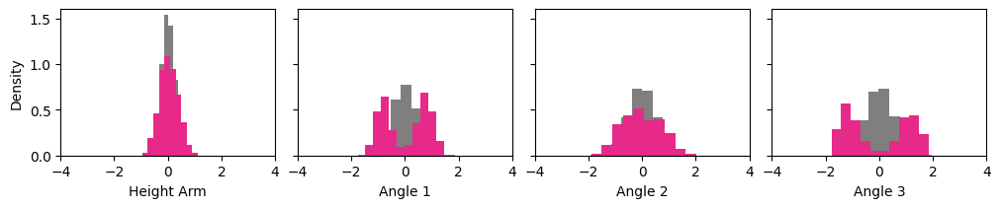
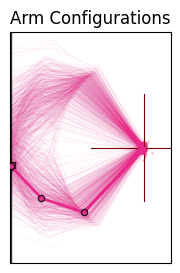
So something seems to have been learned. We get a nice bimodal posterior!
But are we sure that this is the correct posterior? Let’s do amortized inference on 100 datasets!
test_data = simulator.sample(100)
posterior_samples_test_data = workflow_dm.sample(
conditions=test_data,
num_samples=100,
)
fig = bf.diagnostics.plots.coverage(
estimates=posterior_samples_test_data,
targets=test_data,
variable_names=variable_names_nice
)
WARNING:bayesflow:JAX backend needs to preallocate random samples for 'max_steps=1000'.
INFO:bayesflow:Sampling completed in 16.09 seconds.
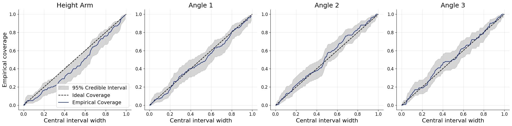
1.5.1. Amortized Bayesian Inference#
SBI is typically used in an amortized way, meaning we train a neural inference model once and then reuse it for many observations.
1.5.1.1. Why amortization matters#
Traditional Bayesian methods (e.g., MCMC) solve one inference problem at a time:
new observation \(\mathbf{x}_{\mathrm{obs}}\) → rerun MCMC
computational cost grows linearly with the number of datasets.
With amortized inference we instead learn a global conditional model: \(q_\phi(\boldsymbol\theta\mid\mathbf{x}) \approx p(\boldsymbol\theta\mid\mathbf{x})\).
After training, posterior sampling for a new observation is fast and convenient: We can solve many inference problems with only one neural network!
1.5.1.2. A note on the “amortization gap”#
The network must generalize to new \(\mathbf{x}\) values across the full simulated data space. If simulations do not cover the region of interest, the approximation may degrade. In practice this is addressed by better priors, more simulations, or robust inference methods.
1.6. 2. What are Diffusion Models?#
Diffusion models are generative models that create samples by iteratively denoising random noise.

1.6.1. Forward process (Training)#
We start with a clean sample \(\boldsymbol\theta_0\) (here: a parameter vector) and gradually add noise:
\(\boldsymbol\theta_t = \alpha_t\,\boldsymbol\theta_0 + \sigma_t\,\boldsymbol\epsilon, \quad \boldsymbol\epsilon \sim \mathcal{N}(0, I)\),
where \(t \in [0,1]\) is a continuous diffusion time. At \(t \approx 1\), the distribution becomes close to pure noise. Different choices of the noise schedule \(\alpha_t\) and \(\sigma_t\) determine how fast noise is added over time and have an impact on the performance later (Arruda et al. (2025)).
So what does the network actually learn? It gets a noisy parameter \(\boldsymbol\theta_t\) and the corresponding simulation \(\mathbf{x}\) and predicts the score \(\nabla_{\boldsymbol\theta_t}\!\log p(\boldsymbol\theta_t\mid\mathbf{x})\).
What is this score? It is the direction in which we need to move \(\boldsymbol\theta_t\) to increase its probability under the posterior. And it can be analytically computed from the noise schedule!
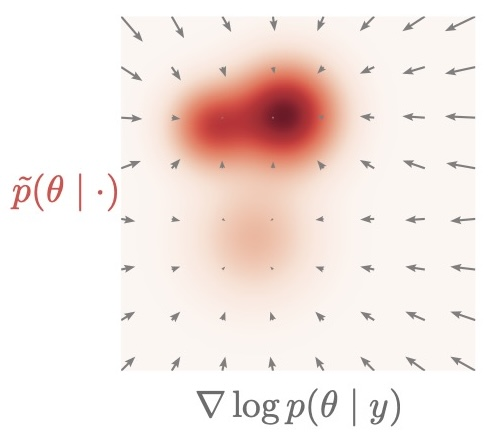
1.6.2. Reverse process (Inference)#
The diffusion model learns how to move from noisy samples back to clean samples. In practice, sampling is performed by solving a learned reverse-time stochastic differential equation (SDE) or an equivalent deterministic ODE.
And how? The reverse SDE/ODE is purely defined in terms of the noise schedule and the learned score!
t_slider_backward = widgets.FloatSlider(
value=0.0,
min=0,
max=1.0,
step=0.05,
description='Diffusion t:',
continuous_update=True,
)
t_slider_backward
logging.getLogger("bayesflow").setLevel(logging.ERROR)
estimated_parameters_t = workflow_dm.sample(
conditions=obs,
num_samples=100,
stop_time=t_slider_backward.value
)
plot_params_kinematic(
estimated_parameters_t['parameters'][0]
)
print(f'Denoised Posterior at t={t_slider_backward.value}')
Denoised Posterior at t=0.0
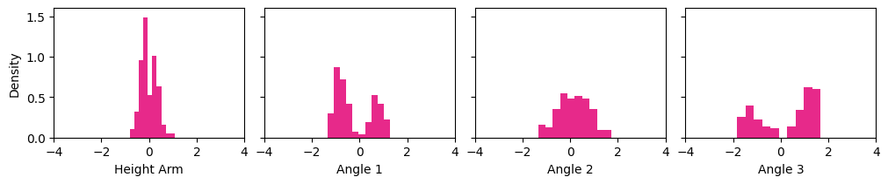
1.6.3. Short Summary#
Diffusion model learns a score function: \(\nabla_{\boldsymbol\theta} \log p(\boldsymbol\theta\mid\mathbf{x})\), the “direction” in which we need to solve the reverse SDE
Sample by starting from noise and iteratively denoising
This provides a highly expressive posterior approximation, especially useful for:
multimodal posteriors,
high-dimensional parameters,
post-hoc modifications during inference.
1.7. More generative models#
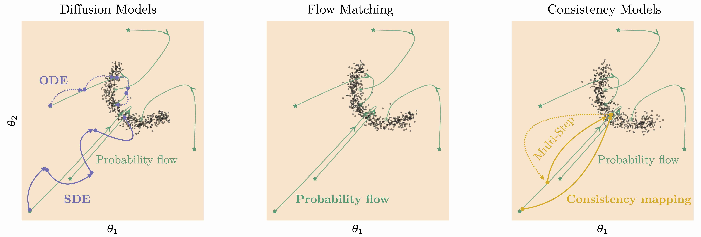
Related generative models can be considered a different parameterization of a diffusion model:
Flow matching: we directly predict the vector field of the deterministic reverse path
Consistency models: designed for very fast sampling by learning to jump directly to clean samples
All of these models are available in BayesFlow. So let’s train some more models and compare their performance on our inverse kinematics problem!
workflows = {}
workflows['diffusion_model'] = workflow_dm
workflow_fm = bf.BasicWorkflow(
adapter=adapter,
simulator=simulator,
inference_network=bf.networks.FlowMatching(),
standardize='inference_conditions'
)
workflows['flow_matching_model'] = workflow_fm
workflow_cm = bf.BasicWorkflow(
adapter=adapter,
simulator=simulator,
inference_network=bf.networks.StableConsistencyModel(),
standardize='inference_conditions'
)
workflows['consistency_model'] = workflow_cm
for _name in workflows.keys():
# Diffusion workflow is already trained, so we skip it here
if _name != 'diffusion_model':
workflows[_name].fit_offline(
training_data,
epochs=200,
batch_size=128,
verbose=0
)
_, _ax = plt.subplots(1, 3, figsize=(10, 4),
subplot_kw=dict(box_aspect=0.9), squeeze=False,
layout='constrained')
_ax = _ax.flatten()
workflows_list = [workflows['diffusion_model'], workflows['flow_matching_model'], workflows['consistency_model']]
for _i, (_a, _w) in enumerate(zip(_ax, workflows_list)):
posterior_samples = _w.sample(
conditions=obs,
num_samples=300
)
_m = InverseKinematicsModel(
linecolors=[['#E7298A'], ['#1B9E77'], ['#E6AB02']][_i]*3
)
_m.update_plot_ax(_a,
posterior_samples["parameters"][0],
obs['observables'][0, ::-1],
exemplar_color="#e6e7eb"
)
_ax[0].set_title('Diffusion Model')
_ax[1].set_title('Flow Matching')
_ax[2].set_title('Consistency Model')
Text(0.5, 1.0, 'Consistency Model')
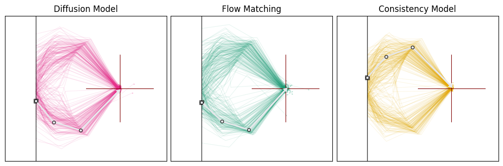
There are lots of choices to make when designing a diffusion model, e.g.:
Which noise schedule?
Diffusion model vs. other generative models?
We explained and benchmarked them extensively in Arruda et al. (2025):
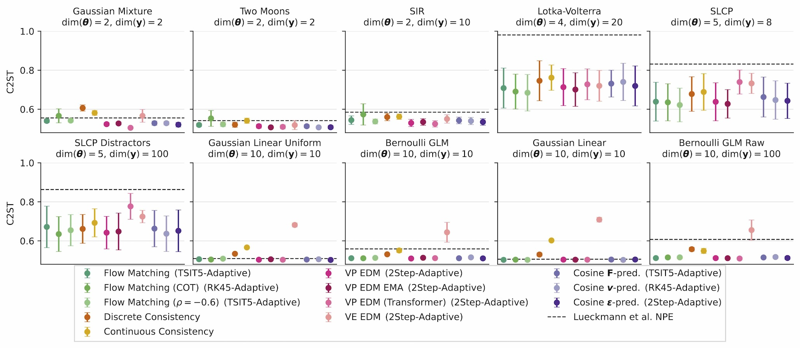
1.8. 3. Why are diffusion models so special for SBI?#
Diffusion-based SBI provides two particularly useful properties. We already have seen that they can tackle difficult and high-dimensional posteriors.
The real game changer is: score-based structure enables “post-hoc control”
Diffusion models learn a conditional vector field (a score/velocity-like object) that drives denoising. This makes it possible to modify inference after training, for example:
introducing additional constraints at sampling time,
composing information from different sources.
This idea forms the basis of compositional inference, which is an active research direction for building scalable hierarchical SBI methods.

1.8.1. Adaptation During Inference Time#
The inverse-kinematics posterior is typically multimodal: multiple arm configurations can match the same end-position. Here, we steer sampling during reverse diffusion by adding the gradient of a differentiable “preference” term to the learned reverse dynamics.
We use the first angle of the “elbow” as a simple selector:
Elbow-up
Elbow-down
def elbow_up_down_constraint(workflow, target="elbow-up"):
"""
Constraint for guided diffusion: pick "elbow-up" or "elbow-down".
The rule is always:
constraint is satisfied <=> c(zt) <= 0
- If target="elbow-up":
c(zt) = -sin(a1) -> wants sin(a1) >= 0
- If target="elbow-down":
c(zt) = sin(a1) -> wants sin(a1) <= 0
"""
sign = -1.0 if target == "elbow-up" else 1.0
def c_elbow(z):
a1 = z[..., 1]
return sign * keras.ops.sin(a1)
return c_elbow
# UI controls
mode = widgets.RadioButtons(
options=["elbow-up", "elbow-down"],
value='elbow-up',
description='Steering target:',
continuous_update=True,
)
strength = widgets.FloatSlider(
value=1.0,
min=0,
max=1.0,
step=0.01,
description='Guidance strength λ:',
continuous_update=True,
)
mode
strength
# Draw samples with and without guidance for side-by-side comparison
constraints = [elbow_up_down_constraint(
workflow_dm, target=str(mode.value)
)]
theta_unguided = workflow_dm.sample(
conditions=obs,
num_samples=300,
)
theta_unguided = theta_unguided['parameters'][0]
theta_guided = workflow_dm.sample(
conditions=obs,
num_samples=300,
guidance_kwargs=dict(
constraints=constraints,
guidance_strength=float(strength.value),
)
)
theta_guided = theta_guided['parameters'][0]
# Visualize effect on arm configurations
fig, ax = plt.subplots(1, 2, figsize=(10, 4), subplot_kw=dict(box_aspect=1.0), layout="constrained")
model_left = InverseKinematicsModel(linecolors=["#E7298A"] * 3) # unguided
model_right = InverseKinematicsModel(linecolors=["#E7298A"] * 3) # guided
model_left.update_plot_ax(
ax[0],
theta_unguided,
obs["observables"][0, ::-1],
exemplar_color="#E7298A",
)
model_right.update_plot_ax(
ax[1],
theta_guided,
obs["observables"][0, ::-1],
exemplar_color="#E7298A",
)
ax[0].set_title("Posterior samples")
ax[1].set_title(f"Guided posterior samples ({mode.value}, λ={strength.value})")
Text(0.5, 1.0, 'Guided posterior samples (elbow-up, λ=1.0)')
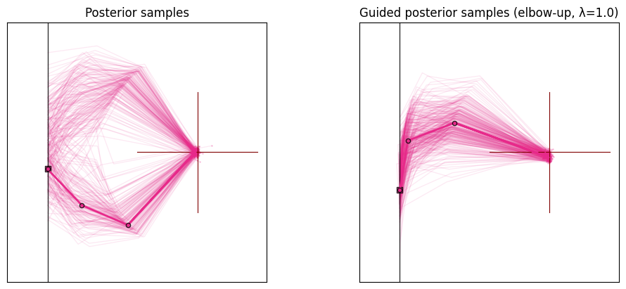
1.8.2. Arbitrary conditionals with a transformer backbone#
So far the network always inferred the full parameter vector \(\boldsymbol\theta=(h,\alpha_1,\alpha_2,\alpha_3)\) from the full observation \(\mathbf{x}=(x_1,x_2)\). In practice, though, we often want to be more flexible after training:
Missing observations: what is the posterior if we only observed part of \(\mathbf{x}\) (e.g. a sensor failed and the \(y\)-coordinate is unavailable)?
Marginals and arbitrary conditionals: what if we only care about a subset of the parameters, or already know some of them and want to condition on them?
A clean way to do this, is to combine a transformer backbone, which tokenizes every parameter and every observation dimension separately, with masking during training. Three probabilities control this:
fixed_target_prob: with this probability, a target (parameter) is fixed to its known value and moved to the conditioning set instead of being inferred. This teaches the network arbitrary conditionals \(p(\boldsymbol\theta_A \mid \boldsymbol\theta_B, \mathbf{x})\).missing_target_prob: with this probability, a parameter is marked as missing, so the network learns to marginalize over absent parameters.missing_conditions_prob: with this probability, an observation dimension is marked as missing, so the network learns to marginalize over absent observations.
Because the network sees many different masking patterns during training, a single amortized model can later answer all of these conditional/marginal queries. We train exactly the same diffusion model as before, but with the diffusion_transformer subnet. While an MLP could also learn this behavior, attention-based architectures allow to gurantee which tokens are taken into account and which are ignored.
# Same diffusion model as before, but with a transformer backbone and masking enabled during training
workflow_dm_transformer = bf.BasicWorkflow(
adapter=adapter,
simulator=simulator,
inference_network=bf.networks.DiffusionModel(
subnet="diffusion_transformer",
fixed_target_prob=0.3, # sometimes condition on a parameter instead of inferring it
missing_target_prob=0.3, # sometimes mark a parameter as missing
missing_conditions_prob=0.3, # sometimes mark a condition as missing
),
standardize='inference_conditions'
)
# Train for 200 epochs (passes through the simulated data)
history = workflow_dm_transformer.fit_offline(
training_data,
epochs=200,
batch_size=128,
)
Epoch 1/200
79/79 ━━━━━━━━━━━━━━━━━━━━ 9s 73ms/step - loss: 1.1517
Epoch 2/200
79/79 ━━━━━━━━━━━━━━━━━━━━ 3s 33ms/step - loss: 1.0331
Epoch 3/200
79/79 ━━━━━━━━━━━━━━━━━━━━ 3s 33ms/step - loss: 1.0324
Epoch 4/200
79/79 ━━━━━━━━━━━━━━━━━━━━ 3s 33ms/step - loss: 1.0765
Epoch 5/200
79/79 ━━━━━━━━━━━━━━━━━━━━ 3s 35ms/step - loss: 1.0110
Epoch 6/200
79/79 ━━━━━━━━━━━━━━━━━━━━ 3s 35ms/step - loss: 0.9418
Epoch 7/200
79/79 ━━━━━━━━━━━━━━━━━━━━ 3s 32ms/step - loss: 0.9254
Epoch 8/200
79/79 ━━━━━━━━━━━━━━━━━━━━ 3s 32ms/step - loss: 0.9166
Epoch 9/200
79/79 ━━━━━━━━━━━━━━━━━━━━ 3s 32ms/step - loss: 0.9620
Epoch 10/200
79/79 ━━━━━━━━━━━━━━━━━━━━ 3s 32ms/step - loss: 0.9267
Epoch 11/200
79/79 ━━━━━━━━━━━━━━━━━━━━ 3s 32ms/step - loss: 1.0678
Epoch 12/200
79/79 ━━━━━━━━━━━━━━━━━━━━ 3s 32ms/step - loss: 1.1229
Epoch 13/200
79/79 ━━━━━━━━━━━━━━━━━━━━ 3s 32ms/step - loss: 0.9704
Epoch 14/200
79/79 ━━━━━━━━━━━━━━━━━━━━ 3s 33ms/step - loss: 1.0301
Epoch 15/200
79/79 ━━━━━━━━━━━━━━━━━━━━ 3s 33ms/step - loss: 0.8984
Epoch 16/200
79/79 ━━━━━━━━━━━━━━━━━━━━ 3s 33ms/step - loss: 0.9587
Epoch 17/200
79/79 ━━━━━━━━━━━━━━━━━━━━ 3s 33ms/step - loss: 0.8512
Epoch 18/200
79/79 ━━━━━━━━━━━━━━━━━━━━ 3s 33ms/step - loss: 0.9160
Epoch 19/200
79/79 ━━━━━━━━━━━━━━━━━━━━ 3s 33ms/step - loss: 0.9560
Epoch 20/200
79/79 ━━━━━━━━━━━━━━━━━━━━ 3s 33ms/step - loss: 0.9288
Epoch 21/200
79/79 ━━━━━━━━━━━━━━━━━━━━ 3s 32ms/step - loss: 0.9063
Epoch 22/200
79/79 ━━━━━━━━━━━━━━━━━━━━ 3s 33ms/step - loss: 0.8809
Epoch 23/200
79/79 ━━━━━━━━━━━━━━━━━━━━ 3s 33ms/step - loss: 0.9634
Epoch 24/200
79/79 ━━━━━━━━━━━━━━━━━━━━ 3s 34ms/step - loss: 0.8425
Epoch 25/200
79/79 ━━━━━━━━━━━━━━━━━━━━ 3s 36ms/step - loss: 0.9130
Epoch 26/200
79/79 ━━━━━━━━━━━━━━━━━━━━ 3s 35ms/step - loss: 0.9040
Epoch 27/200
79/79 ━━━━━━━━━━━━━━━━━━━━ 3s 33ms/step - loss: 0.9178
Epoch 28/200
79/79 ━━━━━━━━━━━━━━━━━━━━ 3s 33ms/step - loss: 1.0904
Epoch 29/200
79/79 ━━━━━━━━━━━━━━━━━━━━ 3s 33ms/step - loss: 0.8659
Epoch 30/200
79/79 ━━━━━━━━━━━━━━━━━━━━ 3s 33ms/step - loss: 0.8899
Epoch 31/200
79/79 ━━━━━━━━━━━━━━━━━━━━ 3s 33ms/step - loss: 1.0116
Epoch 32/200
79/79 ━━━━━━━━━━━━━━━━━━━━ 3s 33ms/step - loss: 0.8425
Epoch 33/200
79/79 ━━━━━━━━━━━━━━━━━━━━ 3s 33ms/step - loss: 0.7829
Epoch 34/200
79/79 ━━━━━━━━━━━━━━━━━━━━ 3s 33ms/step - loss: 0.8626
Epoch 35/200
79/79 ━━━━━━━━━━━━━━━━━━━━ 3s 33ms/step - loss: 1.1865
Epoch 36/200
79/79 ━━━━━━━━━━━━━━━━━━━━ 3s 33ms/step - loss: 0.9212
Epoch 37/200
79/79 ━━━━━━━━━━━━━━━━━━━━ 3s 33ms/step - loss: 0.9996
Epoch 38/200
79/79 ━━━━━━━━━━━━━━━━━━━━ 3s 33ms/step - loss: 0.8768
Epoch 39/200
79/79 ━━━━━━━━━━━━━━━━━━━━ 3s 33ms/step - loss: 0.8797
Epoch 40/200
79/79 ━━━━━━━━━━━━━━━━━━━━ 3s 33ms/step - loss: 0.7654
Epoch 41/200
79/79 ━━━━━━━━━━━━━━━━━━━━ 3s 33ms/step - loss: 0.8983
Epoch 42/200
79/79 ━━━━━━━━━━━━━━━━━━━━ 3s 33ms/step - loss: 0.8143
Epoch 43/200
79/79 ━━━━━━━━━━━━━━━━━━━━ 3s 33ms/step - loss: 0.7709
Epoch 44/200
79/79 ━━━━━━━━━━━━━━━━━━━━ 3s 33ms/step - loss: 0.8151
Epoch 45/200
79/79 ━━━━━━━━━━━━━━━━━━━━ 3s 33ms/step - loss: 0.7435
Epoch 46/200
79/79 ━━━━━━━━━━━━━━━━━━━━ 3s 33ms/step - loss: 0.8668
Epoch 47/200
79/79 ━━━━━━━━━━━━━━━━━━━━ 3s 33ms/step - loss: 0.8928
Epoch 48/200
79/79 ━━━━━━━━━━━━━━━━━━━━ 3s 33ms/step - loss: 0.8532
Epoch 49/200
79/79 ━━━━━━━━━━━━━━━━━━━━ 3s 33ms/step - loss: 0.7713
Epoch 50/200
79/79 ━━━━━━━━━━━━━━━━━━━━ 3s 33ms/step - loss: 0.8391
Epoch 51/200
79/79 ━━━━━━━━━━━━━━━━━━━━ 3s 33ms/step - loss: 0.7451
Epoch 52/200
79/79 ━━━━━━━━━━━━━━━━━━━━ 3s 33ms/step - loss: 0.7361
Epoch 53/200
79/79 ━━━━━━━━━━━━━━━━━━━━ 3s 33ms/step - loss: 0.8025
Epoch 54/200
79/79 ━━━━━━━━━━━━━━━━━━━━ 3s 33ms/step - loss: 0.7649
Epoch 55/200
79/79 ━━━━━━━━━━━━━━━━━━━━ 3s 32ms/step - loss: 0.7662
Epoch 56/200
79/79 ━━━━━━━━━━━━━━━━━━━━ 3s 32ms/step - loss: 0.8651
Epoch 57/200
79/79 ━━━━━━━━━━━━━━━━━━━━ 3s 34ms/step - loss: 0.7343
Epoch 58/200
79/79 ━━━━━━━━━━━━━━━━━━━━ 3s 33ms/step - loss: 0.7998
Epoch 59/200
79/79 ━━━━━━━━━━━━━━━━━━━━ 3s 37ms/step - loss: 0.8002
Epoch 60/200
79/79 ━━━━━━━━━━━━━━━━━━━━ 3s 33ms/step - loss: 0.7385
Epoch 61/200
79/79 ━━━━━━━━━━━━━━━━━━━━ 3s 35ms/step - loss: 0.7339
Epoch 62/200
79/79 ━━━━━━━━━━━━━━━━━━━━ 3s 33ms/step - loss: 0.7516
Epoch 63/200
79/79 ━━━━━━━━━━━━━━━━━━━━ 3s 32ms/step - loss: 0.7924
Epoch 64/200
79/79 ━━━━━━━━━━━━━━━━━━━━ 3s 33ms/step - loss: 0.7572
Epoch 65/200
79/79 ━━━━━━━━━━━━━━━━━━━━ 3s 33ms/step - loss: 0.8446
Epoch 66/200
79/79 ━━━━━━━━━━━━━━━━━━━━ 3s 33ms/step - loss: 0.7484
Epoch 67/200
79/79 ━━━━━━━━━━━━━━━━━━━━ 3s 38ms/step - loss: 1.0092
Epoch 68/200
79/79 ━━━━━━━━━━━━━━━━━━━━ 3s 34ms/step - loss: 0.7671
Epoch 69/200
79/79 ━━━━━━━━━━━━━━━━━━━━ 3s 37ms/step - loss: 0.7987
Epoch 70/200
79/79 ━━━━━━━━━━━━━━━━━━━━ 3s 33ms/step - loss: 0.7591
Epoch 71/200
79/79 ━━━━━━━━━━━━━━━━━━━━ 3s 33ms/step - loss: 0.9329
Epoch 72/200
79/79 ━━━━━━━━━━━━━━━━━━━━ 3s 33ms/step - loss: 0.8312
Epoch 73/200
79/79 ━━━━━━━━━━━━━━━━━━━━ 3s 35ms/step - loss: 0.8124
Epoch 74/200
79/79 ━━━━━━━━━━━━━━━━━━━━ 3s 33ms/step - loss: 0.7587
Epoch 75/200
79/79 ━━━━━━━━━━━━━━━━━━━━ 3s 34ms/step - loss: 0.8820
Epoch 76/200
79/79 ━━━━━━━━━━━━━━━━━━━━ 3s 32ms/step - loss: 0.8170
Epoch 77/200
79/79 ━━━━━━━━━━━━━━━━━━━━ 3s 32ms/step - loss: 0.7319
Epoch 78/200
79/79 ━━━━━━━━━━━━━━━━━━━━ 3s 33ms/step - loss: 0.7540
Epoch 79/200
79/79 ━━━━━━━━━━━━━━━━━━━━ 3s 33ms/step - loss: 0.9738
Epoch 80/200
79/79 ━━━━━━━━━━━━━━━━━━━━ 3s 33ms/step - loss: 0.7935
Epoch 81/200
79/79 ━━━━━━━━━━━━━━━━━━━━ 3s 35ms/step - loss: 0.7959
Epoch 82/200
79/79 ━━━━━━━━━━━━━━━━━━━━ 3s 36ms/step - loss: 0.8589
Epoch 83/200
79/79 ━━━━━━━━━━━━━━━━━━━━ 3s 33ms/step - loss: 0.7199
Epoch 84/200
79/79 ━━━━━━━━━━━━━━━━━━━━ 3s 35ms/step - loss: 0.8490
Epoch 85/200
79/79 ━━━━━━━━━━━━━━━━━━━━ 3s 34ms/step - loss: 0.7337
Epoch 86/200
79/79 ━━━━━━━━━━━━━━━━━━━━ 3s 33ms/step - loss: 0.7788
Epoch 87/200
79/79 ━━━━━━━━━━━━━━━━━━━━ 3s 32ms/step - loss: 0.7779
Epoch 88/200
79/79 ━━━━━━━━━━━━━━━━━━━━ 3s 34ms/step - loss: 0.7521
Epoch 89/200
79/79 ━━━━━━━━━━━━━━━━━━━━ 3s 33ms/step - loss: 0.7248
Epoch 90/200
79/79 ━━━━━━━━━━━━━━━━━━━━ 3s 33ms/step - loss: 0.7913
Epoch 91/200
79/79 ━━━━━━━━━━━━━━━━━━━━ 3s 33ms/step - loss: 0.7527
Epoch 92/200
79/79 ━━━━━━━━━━━━━━━━━━━━ 3s 33ms/step - loss: 0.7446
Epoch 93/200
79/79 ━━━━━━━━━━━━━━━━━━━━ 3s 33ms/step - loss: 0.7729
Epoch 94/200
79/79 ━━━━━━━━━━━━━━━━━━━━ 3s 32ms/step - loss: 0.7376
Epoch 95/200
79/79 ━━━━━━━━━━━━━━━━━━━━ 3s 32ms/step - loss: 1.1011
Epoch 96/200
79/79 ━━━━━━━━━━━━━━━━━━━━ 3s 32ms/step - loss: 0.7568
Epoch 97/200
79/79 ━━━━━━━━━━━━━━━━━━━━ 3s 32ms/step - loss: 0.7471
Epoch 98/200
79/79 ━━━━━━━━━━━━━━━━━━━━ 3s 32ms/step - loss: 0.8055
Epoch 99/200
79/79 ━━━━━━━━━━━━━━━━━━━━ 3s 34ms/step - loss: 0.7547
Epoch 100/200
79/79 ━━━━━━━━━━━━━━━━━━━━ 3s 32ms/step - loss: 0.7441
Epoch 101/200
79/79 ━━━━━━━━━━━━━━━━━━━━ 3s 33ms/step - loss: 0.7373
Epoch 102/200
79/79 ━━━━━━━━━━━━━━━━━━━━ 3s 33ms/step - loss: 0.7252
Epoch 103/200
79/79 ━━━━━━━━━━━━━━━━━━━━ 3s 32ms/step - loss: 0.7203
Epoch 104/200
79/79 ━━━━━━━━━━━━━━━━━━━━ 3s 32ms/step - loss: 0.7360
Epoch 105/200
79/79 ━━━━━━━━━━━━━━━━━━━━ 3s 33ms/step - loss: 0.8313
Epoch 106/200
79/79 ━━━━━━━━━━━━━━━━━━━━ 3s 33ms/step - loss: 0.7246
Epoch 107/200
79/79 ━━━━━━━━━━━━━━━━━━━━ 3s 33ms/step - loss: 0.6870
Epoch 108/200
79/79 ━━━━━━━━━━━━━━━━━━━━ 3s 32ms/step - loss: 0.8000
Epoch 109/200
79/79 ━━━━━━━━━━━━━━━━━━━━ 3s 32ms/step - loss: 0.7516
Epoch 110/200
79/79 ━━━━━━━━━━━━━━━━━━━━ 3s 32ms/step - loss: 0.7562
Epoch 111/200
79/79 ━━━━━━━━━━━━━━━━━━━━ 3s 32ms/step - loss: 0.8922
Epoch 112/200
79/79 ━━━━━━━━━━━━━━━━━━━━ 3s 32ms/step - loss: 0.7957
Epoch 113/200
79/79 ━━━━━━━━━━━━━━━━━━━━ 3s 33ms/step - loss: 0.7708
Epoch 114/200
79/79 ━━━━━━━━━━━━━━━━━━━━ 3s 33ms/step - loss: 0.7567
Epoch 115/200
79/79 ━━━━━━━━━━━━━━━━━━━━ 3s 33ms/step - loss: 0.7738
Epoch 116/200
79/79 ━━━━━━━━━━━━━━━━━━━━ 3s 33ms/step - loss: 0.8676
Epoch 117/200
79/79 ━━━━━━━━━━━━━━━━━━━━ 3s 33ms/step - loss: 0.7168
Epoch 118/200
79/79 ━━━━━━━━━━━━━━━━━━━━ 3s 33ms/step - loss: 0.7287
Epoch 119/200
79/79 ━━━━━━━━━━━━━━━━━━━━ 3s 33ms/step - loss: 0.8189
Epoch 120/200
79/79 ━━━━━━━━━━━━━━━━━━━━ 3s 32ms/step - loss: 0.7858
Epoch 121/200
79/79 ━━━━━━━━━━━━━━━━━━━━ 3s 32ms/step - loss: 0.8154
Epoch 122/200
79/79 ━━━━━━━━━━━━━━━━━━━━ 3s 32ms/step - loss: 0.7453
Epoch 123/200
79/79 ━━━━━━━━━━━━━━━━━━━━ 3s 32ms/step - loss: 0.7295
Epoch 124/200
79/79 ━━━━━━━━━━━━━━━━━━━━ 3s 32ms/step - loss: 0.7398
Epoch 125/200
79/79 ━━━━━━━━━━━━━━━━━━━━ 3s 32ms/step - loss: 0.9457
Epoch 126/200
79/79 ━━━━━━━━━━━━━━━━━━━━ 3s 32ms/step - loss: 0.7345
Epoch 127/200
79/79 ━━━━━━━━━━━━━━━━━━━━ 3s 32ms/step - loss: 0.7488
Epoch 128/200
79/79 ━━━━━━━━━━━━━━━━━━━━ 3s 33ms/step - loss: 0.7156
Epoch 129/200
79/79 ━━━━━━━━━━━━━━━━━━━━ 3s 32ms/step - loss: 0.8417
Epoch 130/200
79/79 ━━━━━━━━━━━━━━━━━━━━ 3s 32ms/step - loss: 0.8475
Epoch 131/200
79/79 ━━━━━━━━━━━━━━━━━━━━ 3s 33ms/step - loss: 0.7503
Epoch 132/200
79/79 ━━━━━━━━━━━━━━━━━━━━ 3s 32ms/step - loss: 0.7088
Epoch 133/200
79/79 ━━━━━━━━━━━━━━━━━━━━ 3s 32ms/step - loss: 0.7827
Epoch 134/200
79/79 ━━━━━━━━━━━━━━━━━━━━ 3s 32ms/step - loss: 0.7203
Epoch 135/200
79/79 ━━━━━━━━━━━━━━━━━━━━ 3s 32ms/step - loss: 0.7457
Epoch 136/200
79/79 ━━━━━━━━━━━━━━━━━━━━ 3s 32ms/step - loss: 0.7754
Epoch 137/200
79/79 ━━━━━━━━━━━━━━━━━━━━ 3s 32ms/step - loss: 0.6722
Epoch 138/200
79/79 ━━━━━━━━━━━━━━━━━━━━ 3s 33ms/step - loss: 0.6544
Epoch 139/200
79/79 ━━━━━━━━━━━━━━━━━━━━ 3s 33ms/step - loss: 0.6900
Epoch 140/200
79/79 ━━━━━━━━━━━━━━━━━━━━ 3s 32ms/step - loss: 0.7277
Epoch 141/200
79/79 ━━━━━━━━━━━━━━━━━━━━ 3s 33ms/step - loss: 0.7500
Epoch 142/200
79/79 ━━━━━━━━━━━━━━━━━━━━ 3s 32ms/step - loss: 0.7206
Epoch 143/200
79/79 ━━━━━━━━━━━━━━━━━━━━ 3s 33ms/step - loss: 0.7452
Epoch 144/200
79/79 ━━━━━━━━━━━━━━━━━━━━ 3s 33ms/step - loss: 0.7261
Epoch 145/200
79/79 ━━━━━━━━━━━━━━━━━━━━ 3s 33ms/step - loss: 0.7449
Epoch 146/200
79/79 ━━━━━━━━━━━━━━━━━━━━ 3s 32ms/step - loss: 0.7840
Epoch 147/200
79/79 ━━━━━━━━━━━━━━━━━━━━ 3s 33ms/step - loss: 0.7286
Epoch 148/200
79/79 ━━━━━━━━━━━━━━━━━━━━ 3s 33ms/step - loss: 0.6721
Epoch 149/200
79/79 ━━━━━━━━━━━━━━━━━━━━ 3s 33ms/step - loss: 0.7074
Epoch 150/200
79/79 ━━━━━━━━━━━━━━━━━━━━ 3s 33ms/step - loss: 0.6545
Epoch 151/200
79/79 ━━━━━━━━━━━━━━━━━━━━ 3s 32ms/step - loss: 0.6958
Epoch 152/200
79/79 ━━━━━━━━━━━━━━━━━━━━ 3s 32ms/step - loss: 0.7390
Epoch 153/200
79/79 ━━━━━━━━━━━━━━━━━━━━ 3s 32ms/step - loss: 0.6857
Epoch 154/200
79/79 ━━━━━━━━━━━━━━━━━━━━ 3s 32ms/step - loss: 0.7143
Epoch 155/200
79/79 ━━━━━━━━━━━━━━━━━━━━ 3s 32ms/step - loss: 0.6746
Epoch 156/200
79/79 ━━━━━━━━━━━━━━━━━━━━ 3s 32ms/step - loss: 0.7549
Epoch 157/200
79/79 ━━━━━━━━━━━━━━━━━━━━ 3s 32ms/step - loss: 0.6440
Epoch 158/200
79/79 ━━━━━━━━━━━━━━━━━━━━ 3s 32ms/step - loss: 0.9553
Epoch 159/200
79/79 ━━━━━━━━━━━━━━━━━━━━ 3s 33ms/step - loss: 0.7342
Epoch 160/200
79/79 ━━━━━━━━━━━━━━━━━━━━ 3s 33ms/step - loss: 0.7313
Epoch 161/200
79/79 ━━━━━━━━━━━━━━━━━━━━ 3s 33ms/step - loss: 0.7841
Epoch 162/200
79/79 ━━━━━━━━━━━━━━━━━━━━ 3s 33ms/step - loss: 0.6997
Epoch 163/200
79/79 ━━━━━━━━━━━━━━━━━━━━ 3s 34ms/step - loss: 0.7137
Epoch 164/200
79/79 ━━━━━━━━━━━━━━━━━━━━ 3s 32ms/step - loss: 0.6782
Epoch 165/200
79/79 ━━━━━━━━━━━━━━━━━━━━ 3s 32ms/step - loss: 0.7320
Epoch 166/200
79/79 ━━━━━━━━━━━━━━━━━━━━ 3s 32ms/step - loss: 0.6654
Epoch 167/200
79/79 ━━━━━━━━━━━━━━━━━━━━ 3s 32ms/step - loss: 0.7301
Epoch 168/200
79/79 ━━━━━━━━━━━━━━━━━━━━ 3s 32ms/step - loss: 0.7141
Epoch 169/200
79/79 ━━━━━━━━━━━━━━━━━━━━ 3s 32ms/step - loss: 0.7217
Epoch 170/200
79/79 ━━━━━━━━━━━━━━━━━━━━ 3s 32ms/step - loss: 0.7014
Epoch 171/200
79/79 ━━━━━━━━━━━━━━━━━━━━ 3s 32ms/step - loss: 0.7348
Epoch 172/200
79/79 ━━━━━━━━━━━━━━━━━━━━ 3s 34ms/step - loss: 0.7483
Epoch 173/200
79/79 ━━━━━━━━━━━━━━━━━━━━ 3s 32ms/step - loss: 0.7479
Epoch 174/200
79/79 ━━━━━━━━━━━━━━━━━━━━ 3s 32ms/step - loss: 0.7939
Epoch 175/200
79/79 ━━━━━━━━━━━━━━━━━━━━ 3s 33ms/step - loss: 0.7323
Epoch 176/200
79/79 ━━━━━━━━━━━━━━━━━━━━ 3s 32ms/step - loss: 0.7244
Epoch 177/200
79/79 ━━━━━━━━━━━━━━━━━━━━ 3s 32ms/step - loss: 0.6881
Epoch 178/200
79/79 ━━━━━━━━━━━━━━━━━━━━ 3s 33ms/step - loss: 0.7167
Epoch 179/200
79/79 ━━━━━━━━━━━━━━━━━━━━ 3s 33ms/step - loss: 0.6846
Epoch 180/200
79/79 ━━━━━━━━━━━━━━━━━━━━ 3s 32ms/step - loss: 0.6958
Epoch 181/200
79/79 ━━━━━━━━━━━━━━━━━━━━ 3s 32ms/step - loss: 0.7040
Epoch 182/200
79/79 ━━━━━━━━━━━━━━━━━━━━ 3s 32ms/step - loss: 0.6620
Epoch 183/200
79/79 ━━━━━━━━━━━━━━━━━━━━ 3s 32ms/step - loss: 0.6764
Epoch 184/200
79/79 ━━━━━━━━━━━━━━━━━━━━ 3s 32ms/step - loss: 0.6606
Epoch 185/200
79/79 ━━━━━━━━━━━━━━━━━━━━ 3s 37ms/step - loss: 0.7041
Epoch 186/200
79/79 ━━━━━━━━━━━━━━━━━━━━ 3s 33ms/step - loss: 0.7717
Epoch 187/200
79/79 ━━━━━━━━━━━━━━━━━━━━ 3s 35ms/step - loss: 0.7387
Epoch 188/200
79/79 ━━━━━━━━━━━━━━━━━━━━ 3s 32ms/step - loss: 0.6887
Epoch 189/200
79/79 ━━━━━━━━━━━━━━━━━━━━ 3s 32ms/step - loss: 0.7221
Epoch 190/200
79/79 ━━━━━━━━━━━━━━━━━━━━ 3s 32ms/step - loss: 0.6675
Epoch 191/200
79/79 ━━━━━━━━━━━━━━━━━━━━ 3s 32ms/step - loss: 0.8035
Epoch 192/200
79/79 ━━━━━━━━━━━━━━━━━━━━ 3s 32ms/step - loss: 0.6879
Epoch 193/200
79/79 ━━━━━━━━━━━━━━━━━━━━ 3s 32ms/step - loss: 0.6872
Epoch 194/200
79/79 ━━━━━━━━━━━━━━━━━━━━ 3s 32ms/step - loss: 0.6777
Epoch 195/200
79/79 ━━━━━━━━━━━━━━━━━━━━ 3s 33ms/step - loss: 0.6626
Epoch 196/200
79/79 ━━━━━━━━━━━━━━━━━━━━ 3s 32ms/step - loss: 0.7063
Epoch 197/200
79/79 ━━━━━━━━━━━━━━━━━━━━ 3s 32ms/step - loss: 0.6802
Epoch 198/200
79/79 ━━━━━━━━━━━━━━━━━━━━ 3s 32ms/step - loss: 0.7116
Epoch 199/200
79/79 ━━━━━━━━━━━━━━━━━━━━ 3s 32ms/step - loss: 0.7278
Epoch 200/200
79/79 ━━━━━━━━━━━━━━━━━━━━ 3s 32ms/step - loss: 0.6901
1.8.2.1. Masking at inference time#
Because the model was trained with masking, we can now steer inference through three per-dimension masks, passed directly as keyword arguments to sample(...). Each mask has shape (num_datasets, num_dimensions) and is broadcast across num_samples:
mask |
applies to |
|
|
|---|---|---|---|
|
observations \(\mathbf{x}\) |
present |
missing |
|
parameters \(\boldsymbol\theta\) |
inferred |
dropped / marginalized |
|
parameters \(\boldsymbol\theta\) |
inferred |
fixed to |
The last mask lets you condition on a known parameter value by additionally passing fixed_target_value. Below we focus on the two “drop”/missing cases.
Let’s first draw the full posterior as a reference, then drop information and see how the posterior reacts.
# Reference: full posterior (both observations, all parameters inferred)
posterior_full = workflow_dm_transformer.sample(conditions=obs, num_samples=1000)
posterior_full = posterior_full['parameters'][0]
# Example A: drop a coordinate of the observation and mask it as missing.
# observed_condition_mask has one entry per observation dimension; 0 = missing.
observed_condition_mask = np.array([[0.0, 1.0]])
posterior_missing_y = workflow_dm_transformer.sample(
conditions=obs,
num_samples=1000,
observed_condition_mask=observed_condition_mask,
)
posterior_missing_y = posterior_missing_y['parameters'][0]
# Visualize effect on arm configurations
fig, ax = plt.subplots(1, 2, figsize=(10, 4), subplot_kw=dict(box_aspect=1.0), layout="constrained")
model_left = InverseKinematicsModel(linecolors=["#E7298A"] * 3)
model_right = InverseKinematicsModel(linecolors=["#E7298A"] * 3)
model_left.update_plot_ax(
ax[0],
posterior_full,
obs["observables"][0, ::-1],
exemplar_color="#E7298A",
)
model_right.update_plot_ax(
ax[1],
posterior_missing_y,
obs["observables"][0, ::-1],
exemplar_color="#E7298A",
)
ax[0].set_title("Posterior samples")
ax[1].set_title("Masked condition: posterior samples")
Text(0.5, 1.0, 'Masked Condition: posterior samples')
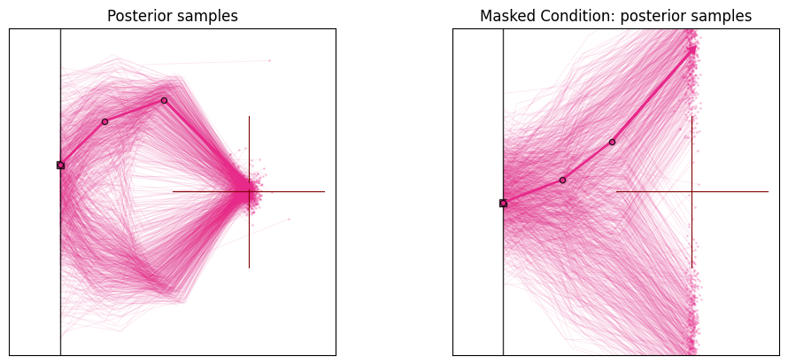
With only the \(x\)-coordinate observed, the data constrains the arm configuration less, so the posterior broadens for the parameters that the \(y\)-coordinate used to pin down.
1.8.2.2. Dropping the initial height#
Instead of an observation, we can also drop a parameter. Here we mark the arm’s height offset \(h\) (parameter index 0) as missing via infer_target_mask, so the network marginalizes it out and infers the three angles without tying them to a specific height. Then we fix the height via fixed_target_mask.
# Example B: drop the initial height (parameter index 0) and marginalize over it.
infer_target_mask = np.array([[0.0, 1.0, 1.0, 1.0]]) # drop height, keep the three angles
posterior_drop_height = workflow_dm_transformer.sample(
conditions=obs,
num_samples=1000,
infer_target_mask=infer_target_mask,
)
posterior_drop_height = posterior_drop_height['parameters'][0]
posterior_drop_height[:, 0] = 0 # the generated value for the height is now pure noise (not sampled from the prior, but from the latent)
posterior_fix_height = workflow_dm_transformer.sample(
conditions=obs,
num_samples=1000,
fixed_target_mask=infer_target_mask,
fixed_target_value=np.array([[0.0, 0.0, 0.0, 0.0]]), # must be of size of the parameters, but fixed_target_mask defines which of them are used
)
posterior_fix_height = posterior_fix_height['parameters'][0]
# Visualize effect on arm configurations
fig, ax = plt.subplots(1, 3, figsize=(10, 4), subplot_kw=dict(box_aspect=1.0), layout="constrained")
model_left = InverseKinematicsModel(linecolors=["#E7298A"] * 3)
model_middle = InverseKinematicsModel(linecolors=["#E7298A"] * 3)
model_right = InverseKinematicsModel(linecolors=["#E7298A"] * 3)
model_left.update_plot_ax(
ax[0],
posterior_full,
obs["observables"][0, ::-1],
exemplar_color="#E7298A",
)
model_middle.update_plot_ax(
ax[1],
posterior_drop_height,
obs["observables"][0, ::-1],
exemplar_color="#E7298A",
)
model_right.update_plot_ax(
ax[2],
posterior_fix_height,
obs["observables"][0, ::-1],
exemplar_color="#E7298A",
)
ax[0].set_title("Posterior samples")
ax[1].set_title(f"Masked target: posterior samples")
ax[2].set_title(f"Fixed target: posterior samples")
Text(0.5, 1.0, 'Fixed target: posterior samples')
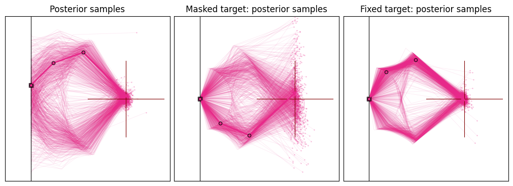
Because the height is marginalized, its samples fall back to the prior (the network no longer ties it to the observation), while the angle posteriors remain informed by the data.
1.9. Summary#
In this tutorial we implemented simulation-based inference (SBI) using BayesFlow to solve a low-dimensional inverse kinematics problem.
Main takeaways:
SBI is likelihood-free Bayesian inference: We avoid evaluating \(p(\mathbf{x}\mid\boldsymbol\theta)\) and train purely from simulations.
Amortization makes inference cheap at test time: After training, we can sample approximate posteriors for new observations instantly. Very useful for diagnostics!
Diffusion models provide strong posterior expressiveness: Iterative denoising can represent complex and multimodal posteriors more reliably than many single-pass density models.
Diffusion models allow post-hoc intervention: We can compose information from multiple sources or apply constraints at inference time.
Recommended next steps:
Check out BayesFlow for
exploring learned summary networks for higher-dimensional observations,
evaluating calibration and coverage using diagnostic tools, like simulation-based calibration.
Further reading:
Diffusion Models In Simulation-Based Inference: A Tutorial Review